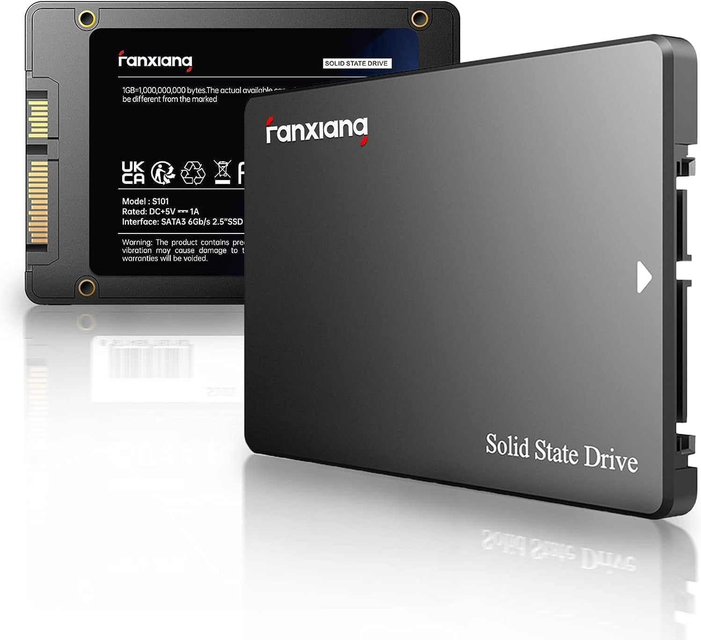

Améliorez les performances de votre ordinateur avec ce SSD de 1 To. Grâce à sa vitesse de lecture et d’écriture élevée, il permet de démarrer rapidement le système, ouvrir les applications plus rapidement et transférer vos fichiers efficacement. Une solution idéale pour remplacer un ancien disque dur.
| Image |  |
| Prix | 89,99 € |